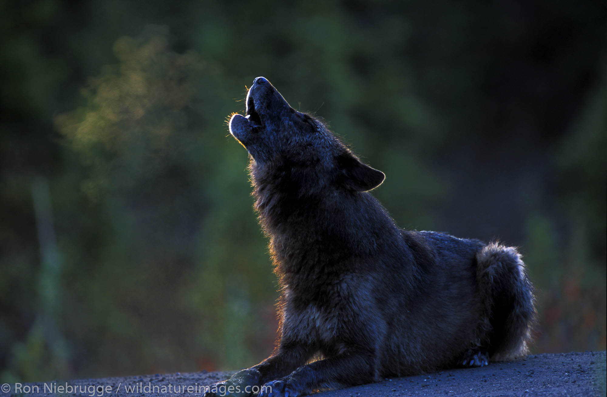
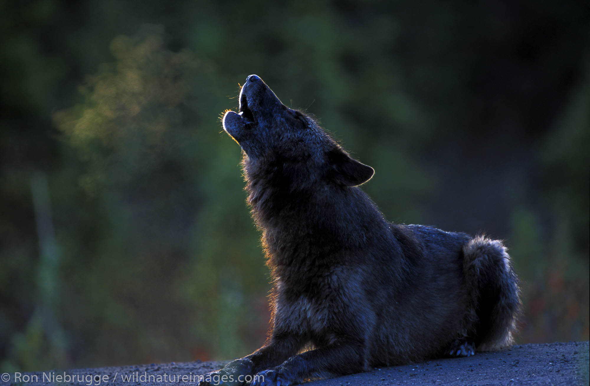

Giant Fur Friends
What Are Wolves?
Wolves are sarge carnivorous mammals that are members of the Canidae family, which is also made up of coyotes, foxes, and domestic dogs. They are very social creatures and live in packs, which are made up of an alpha pair (the dominant male and female), their young, and sometimes other related wolves. Wolves are renowned for their advanced social structures, sharp intelligence, and successful hunting techniques. They can eat smaller animals and scavenge when needed, but their main prey is large herbivores like moose, deer, and elk.
There are various wolf subspecies, the most common and well-known of which is the gray wolf (Canis lupus). The wild and isolated regions of North America, Europe, Asia, and North Africa are home to wolves. Because they aid in the management of other animals' populations, which can have a domino effect on the environment, they are essential to their ecosystems. Wolves are important to nature, but because they are frequently perceived as threats by humans and are persecuted, their numbers are declining in many areas.
Wolves are keystone species because they are essential to preserving the equilibrium of ecosystems. Herbivore population control prevents overgrazing and improves the condition of other wildlife and vegetation. Wolves can restore ecological balance, as evidenced by their successful reintroduction to places like Yellowstone National Park, which has resulted in healthier rivers, higher biodiversity, and more resilient landscapes. Despite this, humans have misinterpreted and attacked wolves frequently, which has resulted in a decline in wolf populations in many areas.
 

Wolves and Their Populations!
There are over 27 species of wolf!
| Wolf Kind | Most Native | Total Population |
|---|---|---|
| Gray Wolf | Alaska/North America | 250,000 |
| Timber Wolf | North America | 10,000+> |
| Eastern Wolf | Canada | 500 |
| Tundra Wolf | Russia | 35,000 |
| Artic Wolf | Canada | 200,000 |